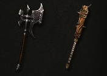

野蛮人
野蛮人是从来不惧怕近身战的野蛮的流浪者。强大的撼地践踏、跳跃攻击和双持横斩让他们的敌人还没挪步就被斩杀成碎块，或让试图临阵脱逃者被顺势砍翻在地。
感谢他们强壮的身体，尽管他们都是用沉重而巨大的武器，野蛮人却可以在近战中通过武器和距离支配一切。野蛮人对战争的威胁一点也不陌生，他们经常要面对数个敌人，给予或得到无数伤口，这比他们试图追杀一个目标要频繁得多。
野蛮人的攻击主要是以近战为主。他们的武器挥动速度极快，并可以瞬间削弱敌人的耐力，而他们使用更缓慢却更强大的震地攻击时，足以撼动千军万马并击破强敌厚重的铠甲。
关键特性
-
近战大师野蛮人可以轻松使用普通战士难以挥动的武器。他们可以使用大剑、锤子甚至双手持斧，甚至可以挥动巨大而笨重的大型武器瞬间将敌人砸成肉泥。
-
凶猛进攻力量和愤怒是同步攀升的。当他们拥有大量的怒气时，野蛮人可以把他们的敌人打飞上天，把他们的肢体切开，或者将骨头从身体里砸出来。 -
呐喊野蛮人在战场上绝无一丝恐惧，他们凶狠的战争吼叫可以让自己和盟友的怒气和斗志迸发，或者让敌人感到强烈的害怕和压抑。再强大的敌人听到野蛮人的怒吼之后都会对他们畏惧三分。 -
越战越勇没有一个英雄能像野蛮人一样承受敌人的攻击。他们强壮的躯体可以让他们使用巨大的盾牌，而身体可以坚硬到反弹剑砍或牙咬的伤害。
能量源：怒气

只要还有一口气，愤怒就是野蛮人永远不会枯竭的动力。怒气，由仇恨和战斗欲所充斥的这个能量源，能让野蛮人的每次攻击都是那般致命。
愤怒在他们受到伤害时或尝到敌人的鲜血时也会提升。野蛮人受到的伤害越多，他们获得的怒气也越多，所以能将敌人击溃的速度也越快。
多余的怒气可以让野蛮人彻底粉碎战场上的一切，暴怒中的野蛮人是最恐怖的，可以瞬间让敌人身首异处。
在非战斗状态，怒气会很快被缓解，所以野蛮人老战士都会不停地冲锋陷阵并让自己一直保持战斗的欲望。
特色装备
野蛮人有使用常人所无法使用的武器的力量。他们可以挥动那些常人无法举起的尺寸过大的巨型武器，并运用自如。野蛮人强壮的肌肉也可以双手持有两把武器，比如剑和斧，并同时对敌人施放多种打击效果。

装备变化

职业纹章